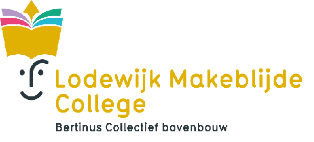

Welkom op de pagina van het Lodewijk Makeblijde College

Welkom!
Beste leerling, beste ouder
Welkom op de website van het Lodewijk Makeblijde College (zeg maar LMC). We zijn blij dat je geïnteresseerd bent om meer te weten over onze school. We geven je graag wat meer uitleg.
Het LMC is de bovenbouwschool van de secundaire scholen van Bertinus Collectief Poperinge. We startten ermee op 1 september 2020. Sinds die dag zitten alle leerlingen van de 2e graad samen op één campus, gelegen aan de Boeschepestraat 20.